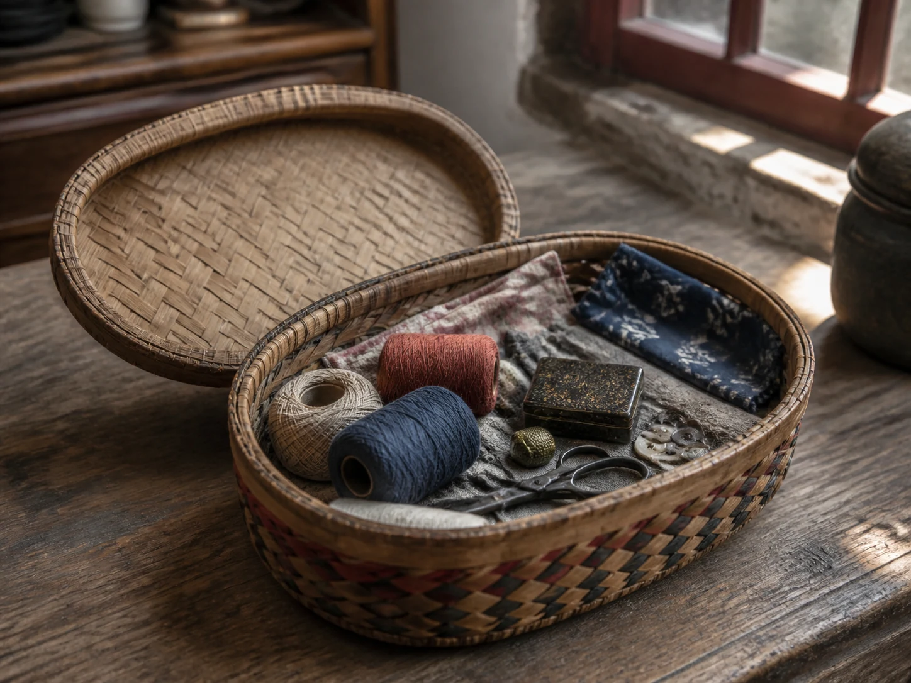

The Sewing Basket Open in Afternoon Light
The sewing basket stayed open beside the window, holding spare buttons, wound thread, cloth scraps, and a pair of scissors small enough to disappear beneath them.

A basket that never looked finished
The sewing basket resisted neatness. Thread loosened from a card, buttons slipped beneath folded cloth, and the smallest needle case settled at the bottom. A pair of scissors lay across everything else, its finger loops polished where the metal had been held.
Some households used a shallow basket; others gave an old tin another life. The container mattered less than its availability. A loose hem did not have to wait for a formal sewing day. The tools were already together, close enough to open when a sock thinned or a button began to turn on one strand.
The needle in afternoon light
Afternoon light made the small work easier. The cloth could be held near the window before the evening lamp came on. A needle passed through the same place twice, the thread tightened, and a garment that had briefly left the household rhythm returned to it.
The repair should not be romanticized as proof that earlier life was simpler or more virtuous. Mending could express care, necessity, skill, or limited choice; it was also labor, often so ordinary that the person doing it disappeared behind the finished seam. A family record is stronger when it names that person and the circumstances.
The basket left within reach
When the hem was secure, the loose thread was wound back and the needle pressed into its case. Scraps too small for that repair remained in the basket, waiting beneath the spools. A piece of worn cloth might later receive another task, as the pillowcase did in The Coarse Salt Warming Bag.
The scissors closed with one dry sound, and the thimble returned to its small metal case nearby. The lid did not always follow. The basket stayed beside the window because another cuff, button, or small tear would eventually arrive. Useful things were not promised forever; they were given one more try.